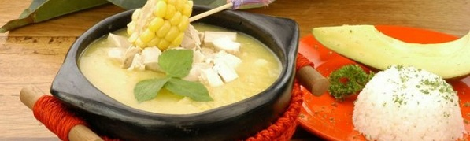

El arroz con camarones es t�pico de la Costa Caribe y Costa Pac�fica, aunque en las dem�s regiones ya se ha vuelto un plato muy apetecido para ocasiones especiales.
Personas: 10
INGREDIENTES
Licua el coco con su agua. Pasar por una coladera y exprimir bien. Reservar la leche obtenida y el coco licuado. Repetir la preparaci�n anterior con agua normal con agua normal, tibia, hasta obtener cuatro tazas de leche de coco. Reservar.
Aparte, en una olla al fuego, agregar la primera leche, dejar secar hasta obtener el aceite y los doraditos de coco. Incorporar la segunda leche, el az�car, la sal y dejar hervir.
Mezclar con el arroz previamente lavado y los camarones. Dejar secar y continuar la cocci�n a fuego bajo tapado, hasta que el arroz est� listo.